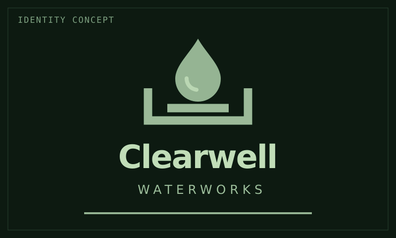

Lore / Clearwell Waterworks
Clearwell Waterworks
 | |
| Identity concept. Emblem and company colors are not established branding. | |
| Type | Independent water-processing company |
|---|---|
| Origin | Saturn |
| Founders | Former EarthWorks staff |
| Principal business | Baikal water station |
| Earth parent | None |
{kind=link}
Clearwell Waterworks is a small company founded at Saturn by former EarthWorks Industrial staff. Its principal business is Baikal, an inhabited water-processing station.
Where the major operators extend businesses built on Earth, Clearwell's founders have made their own business at Saturn. Their old employer is a professional connection, not a parent company. Clearwell is an example of lawful independence already taking root in the settlement network.
Work worth keeping
Co-founder Elena Ward manages Baikal and lives at the station. Its commercial problems affect the same community in which Elena lives and works.
Clearwell is a genuinely decent employer. Its people have useful work, decent conditions, and a station that is also home to a small permanent community. Running it well matters for more than continued production: a failure reaches into the lives built around the plant.
The company wants to repair its operational problems and continue under its own control. Independence does not remove its dependence on equipment, supplies, customers, or the wider network. It makes those pressures the problems of a local business rather than instructions from an Earth parent.
Water and the settlement network
The rings contain abundant ice. Clearwell's value is the ability to turn raw material into a useful supply. Collection, processing, power, maintenance, and transport stand between a distant mass of ice and water available where people need it.
Its water station is its principal business. Whether Clearwell has any other operations, and the details of its customer contracts, remain open.
Names and ships
Clearwell names its ships after Earth rivers and its stations after Earth lakes or seas. Baikal is the community's name; Clearwell Waterworks is its employer and operator. The naming tradition does not imply a chain of other stations.
Kaveri is a workship for maintenance, recovery, and small cargo jobs. Ebro is a water hauler. Both serve Baikal's operation and are unarmed civilian ships.
The workship crew
Jonah Mercer captains Kaveri with Leila Haddad, Tomas Vega, Rina Okafor, and Samir Bell. They are employed crew, not the company's founders or the owners of their ship.